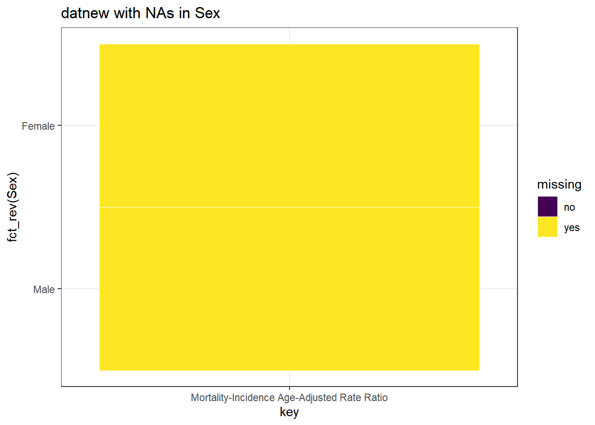
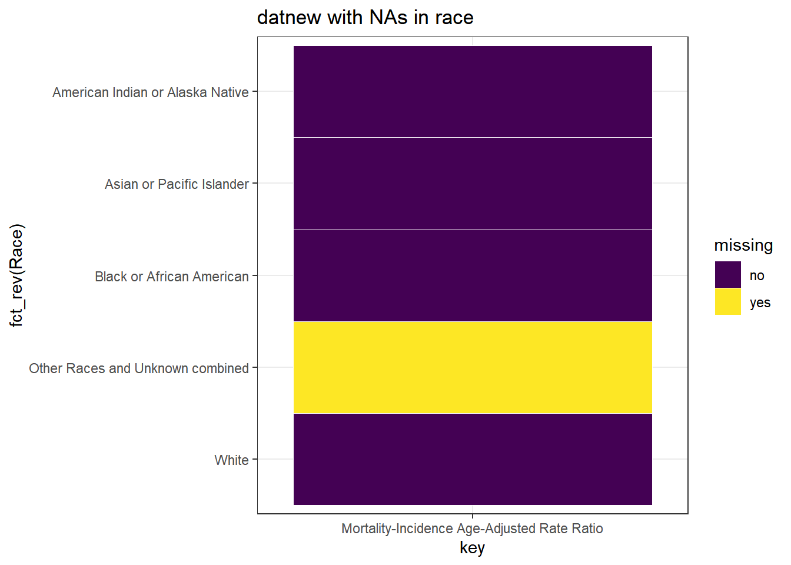
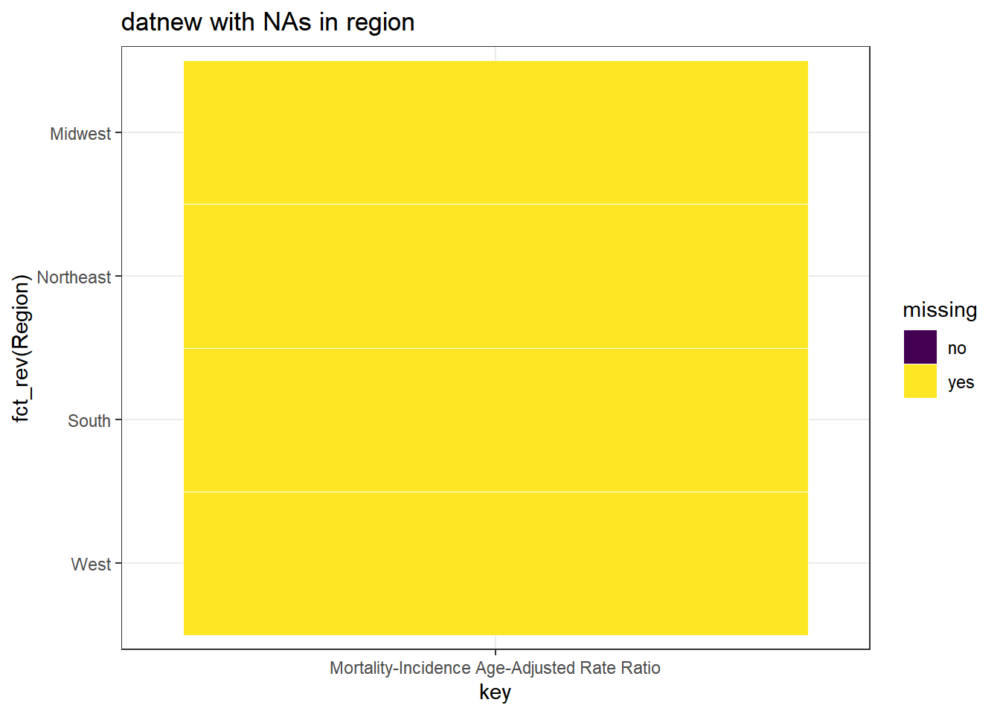
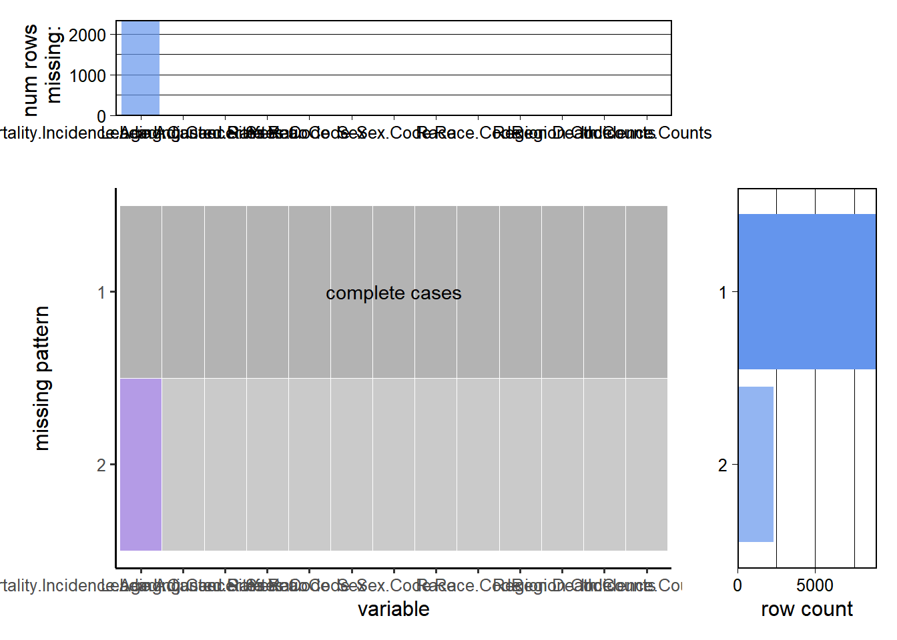

Chapter 5 Results
## [1] 1 1 1 1 1 1 1 1 1 1## # A tibble: 6 x 13
## `Leading Cancer Si~` `Leading Cance~` Year `Year Code` Sex `Sex Code` Race
## <chr> <chr> <dbl> <dbl> <chr> <chr> <chr>
## 1 Brain and Other Ner~ 31010-31040 1999 1999 Fema~ F Asia~
## 2 Brain and Other Ner~ 31010-31040 1999 1999 Fema~ F Blac~
## 3 Brain and Other Ner~ 31010-31040 1999 1999 Fema~ F Blac~
## 4 Brain and Other Ner~ 31010-31040 1999 1999 Fema~ F Blac~
## 5 Brain and Other Ner~ 31010-31040 1999 1999 Fema~ F Blac~
## 6 Brain and Other Ner~ 31010-31040 1999 1999 Fema~ F White
## # ... with 6 more variables: `Race Code` <chr>, Region <chr>,
## # `Region Code` <chr>, `Mortality-Incidence Age-Adjusted Rate Ratio` <dbl>,
## # `Death Counts` <dbl>, `Incidence Counts` <chr>

  Race seems to have the strongest association with Incidence counts.
## # A tibble: 22 x 2
## `Leading Cancer Sites` Freq
## <chr> <dbl>
## 1 Breast 4432442
## 2 Lung and Bronchus 4237328
## 3 Prostate 4178907
## 4 Colon and Rectum 2928387
## 5 Urinary Bladder 1366819
## 6 Melanoma of the Skin 1287768
## 7 Non-Hodgkin Lymphoma 1265074
## 8 Kidney and Renal Pelvis 1025166
## 9 Leukemias 891625
## 10 Corpus Uteri 872060
## # ... with 12 more rows5.0.1 Q2.

## [1] "Esophagus" "Pancreas"
## [3] "Liver" "Gallbladder"
## [5] "Lung and Bronchus" "Brain and Other Nervous System"
## [7] "Ovary" "Stomach"
## [9] "Myeloma" "Leukemias"
## [11] "Larynx" "Colon and Rectum"
## # A tibble: 6 x 3
## # Groups: Leading Cancer Sites [2]
## `Leading Cancer Sites` Year rate
## <chr> <chr> <chr>
## 1 Brain and Other Nervous System 1999-2002 Medium
## 2 Brain and Other Nervous System 2002-2006 Medium
## 3 Brain and Other Nervous System 2006-2010 Medium
## 4 Brain and Other Nervous System 2010-2014 Medium
## 5 Brain and Other Nervous System 2014-2018 Medium
## 6 Colon and Rectum 1999-2002 Low